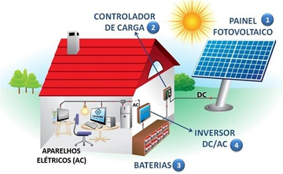
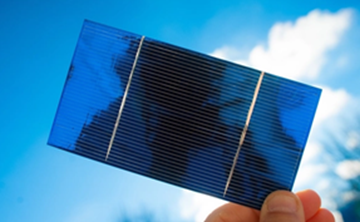
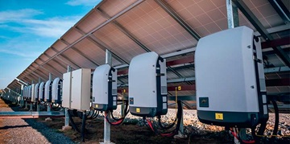

Sistemas Fotovoltaicos
Princípios de Funcionamento dos Sistemas Fotovoltaicos
Conversão de Energia Solar
Quando a luz solar, composta por partículas chamadas fótons, atinge a superfície de uma célula fotovoltaica, a energia dos fótons é absorvida pelos elétrons presentes nos materiais semicondutores. Essa absorção excita os elétrons, liberando-os de suas ligações atômicas e colocando-os em movimento, o que gera uma corrente elétrica.
Adaptado em: Conversão
Células Fotovoltaicas
A maioria das células fotovoltaicas é fabricada a partir de silício, um material semicondutor abundante. Uma célula típica é composta por duas camadas de silício dopado: uma camada de silício tipo "p" (positiva), que possui uma deficiência de elétrons (lacunas), e uma camada de silício tipo "n" (negativa), que possui um excesso de elétrons. A junção dessas duas camadas cria um campo elétrico interno. Quando os elétrons são excitados pela luz solar, esse campo elétrico os direciona, criando um fluxo ordenado de corrente elétrica contínua (CC).
Adaptado em: Células Fotovoltaicas
Inversores
A corrente elétrica gerada diretamente pelas células fotovoltaicas é contínua (CC), que é adequada para alguns dispositivos eletrônicos, mas não para a maioria das aplicações residenciais, comerciais ou industriais, que utilizam corrente alternada (CA). Para que a energia solar possa ser utilizada na rede elétrica convencional ou em aparelhos domésticos, é necessário um dispositivo chamado inversor. O inversor é responsável por converter a corrente contínua (CC) produzida pelos painéis em corrente alternada (CA), além de otimizar a potência gerada e garantir a segurança e a sincronização com a rede elétrica.
Adaptado em: Inversores